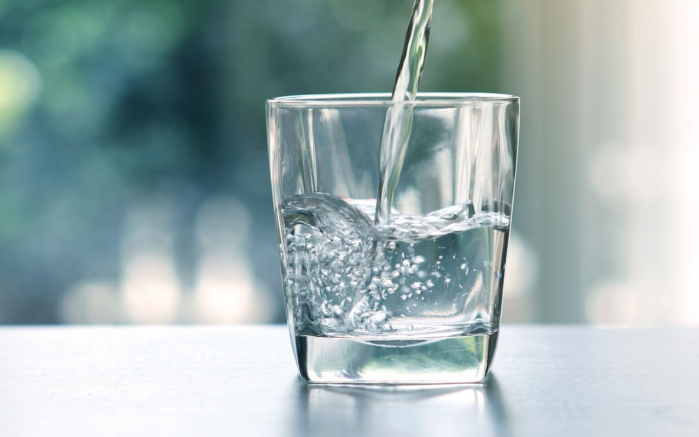

<ion-header>
  <ion-toolbar>
    
    <ion-buttons slot="start">
      <ion-button (click)="mostrarMenu()" color="tertiary">
        <ion-icon slot="icon-only" name="menu-outline"></ion-icon>
        
      </ion-button>
    </ion-buttons>

    <ion-title>Inicio</ion-title>

  </ion-toolbar>
</ion-header>

<ion-content class="ion-padding">
  <ion-list>
      <ion-item *ngFor="let c of componentes"
                [routerLink]="c.redirecTo"
                detail=true>
        <ion-icon [name]="c.icon" slot="start" color="tertiary"></ion-icon>
        {{c.name}}
      </ion-item>
    </ion-list>
    <ion-card color="primary">
      
      <ion-card-header >
        <ion-icon name="water" color="dark" size="large"></ion-icon>
        <ion-card-title class="titulocard">Agua diaria</ion-card-title>
      </ion-card-header>
      <ion-card-content class="info">
        Hoy has tomado 0/8 vasos de agua.
      </ion-card-content>
    </ion-card>
    <ion-card color="warning">
      
      <ion-card-header >
        <ion-icon name="fitness" color="light" size="large"></ion-icon>
        <ion-card-title class="titulocard">Ejercicio diario</ion-card-title>
      </ion-card-header>
      <ion-card-content class="info">
        Hoy has hecho 0/30 minutos de ejercicio.
      </ion-card-content>
    </ion-card>
    <ion-card color="dark">
      <ion-card-header >
        <ion-icon name="fitness" color="light" size="large"></ion-icon>
        <ion-card-title class="titulocard">Seguimiento de tu dieta</ion-card-title>
      </ion-card-header>
      <ion-card-content class="info">
        <ion-item color="dark">
          <ion-checkbox> </ion-checkbox>
          <ion-label> 5 porciones de fruta</ion-label>
        </ion-item>
        <ion-item color="dark">
          <ion-checkbox> </ion-checkbox>
          <ion-label> 400 gramos de verduras</ion-label>
        </ion-item>
      </ion-card-content>
    </ion-card>
    
    <ion-tab-bar slot="bottom">
        
      <ion-tab-button *ngFor="let c of componentes"
                      [routerLink]="c.redirecTo"
                      detail=true>
        <ion-icon [name] = "c.icon"></ion-icon>
        <ion-label>{{ c.name }}</ion-label>
      </ion-tab-button>
      
    </ion-tab-bar>

</ion-content>
